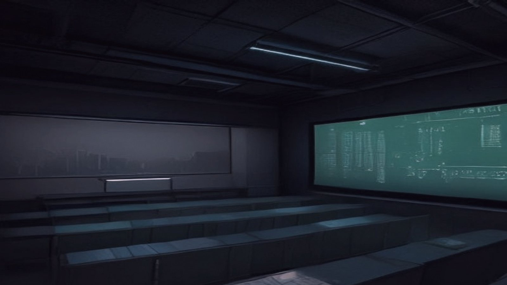
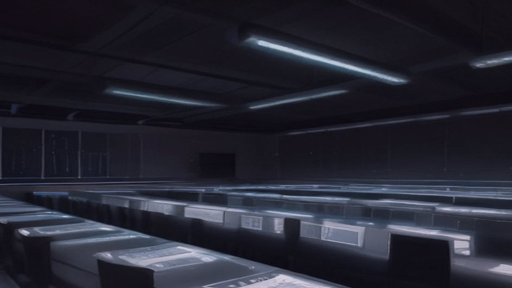
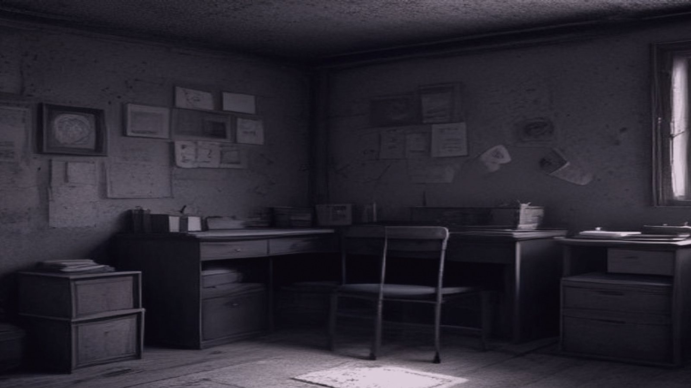
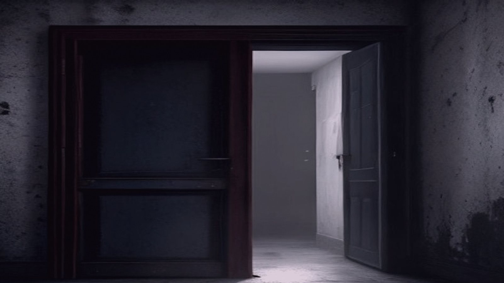
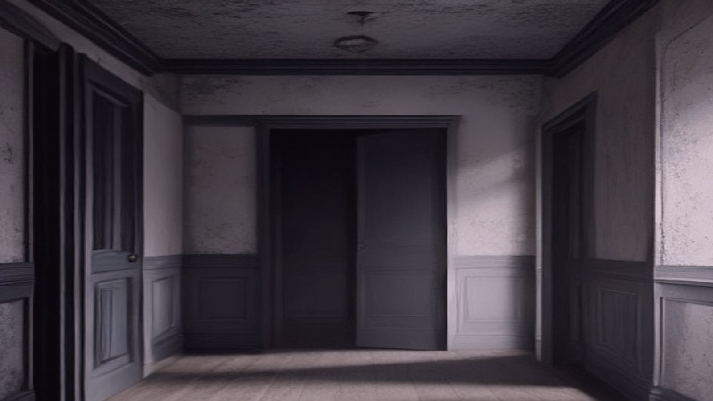

Gideon Ames scribbled notes on the day's logsheet, his pen scratching across the grid. The fluorescent lights overhead cast a pale glow over the control house's operations room, illuminating the banks of monitoring screens and consoles. Outside, the river churned with the morning's first icebreakers. Gideon marked the time of the last lock opening – 06:47 – before moving on to the next task.
He poured himself a lukewarm coffee from the thermos on his desk, the one he'd brought from home. The steam from the cup fogged up the windows for an instant before evaporating into the chilly air. Gideon's eyes flicked between the screens as he made sure the systems were still within nominal parameters.
The river's water level was dropping steadily, a predictable result of the previous night's sleet storm. He noted this on the logsheet with a quick notation: "-2.5' delta since last check". The control house's hum – a soothing background thrum that was always present but never really noticed – provided a constant reminder of the machinery at work outside.
Gideon checked his watch, mentally calculating how long it'd take to get through the day's scheduled tasks before handing over to his relief. He had an hour's worth of paperwork due by the end of his shift, and he still needed to review the ice thickness readings from last week's survey. The phone on his desk beeped quietly; he picked up to take a call from the downstream operator, their voices low and professional as they discussed the latest changes in flow rates.
Gideon leaned back in his chair, rubbing the weariness from his eyes as he listened to the downstream operator's soothing voice on the phone. As he nodded along with the conversation, his gaze drifted around the control house, taking in the familiar sight of the main console and the banks of screens displaying the river's water levels and flow rates.
His eye snagged on something behind the mirror on the wall – a reflection that didn't belong. He frowned, swinging his chair around to face the spot. And there it was: a piece of paper tacked up with a small nail, almost invisible until you knew where to look. The handwriting on the paper was messy and cramped, a series of numbers and symbols that made no sense.

Gideon's first thought was that someone had scrawled this up as a joke or a prank, but there was something about it – the cramped handwriting, the lack of any recognizable words or context – that felt wrong. He pushed the thought aside, telling himself it was probably just some leftover from a previous maintenance worker who'd scribbled down a set of notes and forgotten to remove them.
He stood up, walking over to the mirror to get a closer look at the paper. The handwriting seemed familiar, but he couldn't quite place it. Maybe it was one of the new maintenance guys? No, that wasn't right – he'd met everyone on site already, and none of them had written like this.
He took a deep breath, pushing the uneasy feeling aside. It was probably just some silly mistake, something to be forgotten as soon as he got back to his paperwork. He turned to put the thought out of his mind, and that's when he noticed the transformer outside humming away in the distance. As he walked over to the window, its pitch shifted, ever so slightly, like it was alive and watching him.
Gideon adjusted his watch for what felt like the hundredth time that morning, but it was actually only 07:14. He'd noticed it running a little fast again – four minutes this time – and he made a mental note to bring it in for servicing when he got back to town. As he scribbled down some notes on his clipboard, he caught himself thinking about something that sounded uncannily like a snippet from the previous day's meeting with the water management team.
"That's right, I remember now," he said aloud, trying to shake off the feeling of déjà vu. He'd been thinking it, hadn't he? That was all. Just a normal morning brain haze, and his mind playing tricks on him. He glanced around the control room, taking in the familiar layout of console screens and instrument panels. Everything looked just as it should – except for one thing.
On the far wall, a large whiteboard that usually stood empty now displayed a crude sketch of the dam's intake valves. Gideon had no recollection of drawing it himself, but it looked...familiar. Maybe I doodled it while on hold with the maintenance guys? He shrugged to himself and began to erase the sketch with a marker, only to pause mid-stroke as he caught a snippet of conversation that sounded identical to something his wife had said to him last week.

"...and then I saw this bird flying overhead –"
No, no, no. That was ridiculous. He must have misremembered. It was just a coincidence, a weird echo in his brain from the previous day's conversation with the water management team. It's just static. My mind's playing tricks on me again. Gideon forced himself to focus on the task at hand – reviewing the morning's river flow data – but the words lingered in his head, refusing to be shaken off.
Gideon's eyes wandered from the screen to the phone on his desk, its cord trailing across the floor like a snake. He hadn't tried calling the station yet; he'd been too caught up in reviewing the flow data. Now, as the minutes ticked by, he found himself wanting some human voice to cut through the isolation of this place. He picked up the receiver and dialed the station's number.
The phone rang three times before a static-filled voice answered on the other end. "This is dispatch, please hold –" The sound was distorted, like someone was trying to broadcast from a different frequency altogether. Gideon's mind flashed back to the conversation he'd overheard, the words lingering in his head like a bad habit.
"Goddamn it," he muttered under his breath, trying again with a different extension. This time, the phone simply wouldn't ring at all – just silence, as if the line was dead.
Gideon's skin prickled with annoyance; he was used to decent communication equipment here. He tried the radio on his desk, but it was quiet too – no chatter from the station or the river traffic. His eyes strayed out the window to the river, where ice floes were starting to form on the surface. February was always this way, with winter's chill settling in. But now, a thin crust of frost had begun to etch its way across the lock house's windowsills, like Nature's own seal.
Must be a power issue, Gideon told himself, not a communications problem. But as he turned back to the phone, his hand hesitated over the receiver. The silence seemed... heavier than it should be.

Gideon's hand hovered over the receiver, his mind replaying the last conversation he'd had with his wife, Emily. "Hey, love, just checking in, how's the day going?" But now, as he looked at the phone, it sounded different – too perfect, too rehearsed. He tried to recall the way her voice normally wavered on the fifth syllable of "checking," but that detail seemed lost.
He stood up from his chair and walked over to the doorframe separating the control room from the hallway. His eyes drifted to the smooth spot where his shoulder would meet the wood, a place worn down by years of frequent leaning against it. Now, as he stared at the mark, he could almost hear Emily's voice again: "Don't worry about dinner, I'll pick something up on my way home." Only this time, her words felt... rehearsed.
Gideon spun around, trying to shake off the feeling that his mind was playing tricks. He walked back to the control panel and picked up the phone, dialing his wife's number again. This time, the ringing seemed to go on forever – no static, no silence, just an endless wait for someone to answer. Maybe she's in a meeting, he thought.
But as he stood there, his eyes began to feel... heavy. The words he'd heard in his mind, they felt... wrong. He looked around the room again, and this time noticed something else: on the wall opposite him, the hum of the transformer was changing pitch – it pulsed a little faster when he approached, then slowed as he moved away.
The sound had been there before, but now Gideon couldn't ignore it. Maybe it's just my nerves, he thought, trying to push aside the growing unease. But his eyes kept drifting back to that smooth spot on the doorframe – and he could swear...
Gideon's eyes snapped back to the doorframe as he felt it again – that subtle shift in air pressure around him. He didn't think; he moved, pushing off from the console to sprint towards the exit. The door, however, didn't yield. It was stuck fast, the hinges groaning under strain.
He tried the handle twice more before slamming his shoulder into it. Metal scraped against metal as he rebounded, pain shooting through his chest. Coughing, he spun around to face the room. The air was thick with a smell like damp wool, heavy and clinging – the same stench that clung to the walls outside when the river swelled.

His lungs burned from exertion, but Gideon's gaze locked onto something new: on the far side of the room, a section of wall had split open. Cracked concrete yawned into darkness, like a mouth wide open in surprise. The hum from the transformer was louder now, almost a low growl, and the air vibrated with it.
As he watched, the wall continued to shift, the crack spreading like a fault line. The room seemed to be... unfolding itself, revealing something hidden within its depths. Gideon's breath came in ragged gasps, his heart hammering against his ribs. His skin felt clammy and cold, as if the temperature had dropped by ten degrees.
He took another step back from the door, eyes fixed on that gaping wound in the wall. A sound began to build inside him – a low rumble, growing louder with each passing heartbeat. It wasn't coming from outside; it was building within his own chest. His breathing, once steady and controlled, had become ragged and uneven, as if he'd just run up a flight of stairs. This is panic, Gideon thought, trying to seize control of his racing heart. But the words felt hollow, detached. He couldn't shake the sense that something was closing in on him – physically, impossibly – from all directions at once.
Gideon's gaze flickered to Emily, standing frozen in the doorway, her eyes wide with a mix of horror and... something else. He tried to step forward, but his legs seemed rooted to the spot. The rumble inside him was growing louder, threatening to consume him whole.
"What's wrong?" he managed to croak, as if the sound might be coming from outside, rather than within.
Emily didn't answer. Her gaze darted between him and the gaping wound in the wall, her face pale. Then she took a step back, and another, until she was pressed against the doorframe, her eyes locked on Gideon's.
He felt it then – the weight of his own body, as if he were made of lead, sinking into the floorboards. The room seemed to contract around him, the air thickening with an unspoken truth.

And in that instant, Emily's expression changed. It was a subtle shift, but Gideon saw it – a flicker of recognition, followed by something akin to revulsion. She glanced at her watch, and then back at Gideon, her eyes haunted.
The rumble inside him grew louder still, until it became a deafening roar that drowned out everything else. He felt his vision narrowing, as if the edges of his world were being sucked inward, toward some dark center.
Gideon's mind reeled, trying to grasp what was happening. But the truth was already written on Emily's face – a truth that made no sense, yet fit perfectly into the spaces he'd been ignoring all along.
It was 07:14. Gideon had been dead for 27 minutes.
The sun rose over the frozen river, casting a pale glow over the ice-covered lock. Gideon's body remained slumped against the control panel, his eyes frozen in a permanent stare.
Inside the dam's control house, Emily sat in the empty chair beside him, her fingers still clutching the edge of the desk as if she'd been about to speak. The clock on the wall showed 08:04 – over an hour had passed since Gideon's...whatever that was. The room remained silent, except for the steady hum of the transformer outside.
In the control room above, Ron Wilson, the night shift operator, was sipping his coffee and checking the morning schedule. He ran a finger down the list of expected maintenance runs: routine checks on the dredge, inspections at Lock 15. Nothing out of the ordinary. At 08:05, he pressed play on the recording from the previous evening's shift – the log-in conversation with Gideon Ames, the job applicant.
Emily's records showed she'd been working overtime for three days straight; her last break had been a 30-minute lunch at 12:47 the day before. Her supervisor would have to review the attendance reports. The office would be opening soon, and Emily's absence would need to be noted.
Outside, the ice on the river was beginning to crack, its surface etched with fine fissures that spread like veins across the white expanse. In the distance, a low-pitched whine started to rise from the transformer – its pitch dropped slightly as Ron approached, and then stabilized once more.